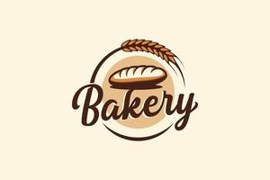

Thank you so much for visiting our webpage! We can't wait to see you soon!
Here is a handy list of our social handles, to keep up to date with how we're doing at the bakery!
Youtube
Instagram
Twitter (X)
BlueSky
Here is a handy list of our social handles, to keep up to date with how we're doing at the bakery!
Youtube
Twitter (X)
BlueSky
If you were unable to find this information other places, here is a little bit of info regarding how we operate: We are open 8 - 10 all days but Sunday, our off day, you can find our location in the 'location' page, and along with it, a generalized table of how long it'll take us to make certain things. Additionally, if you want to contact us, got to the 'contact' page and fill out the form and we will get in touch!